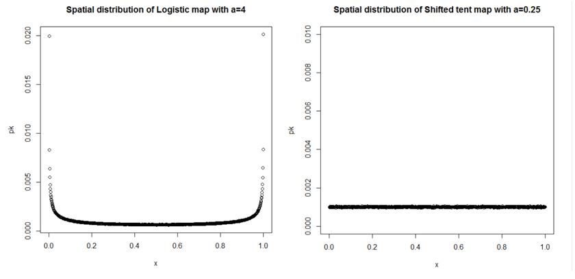

Chaos theory is a branch of mathematics focusing on the behavior of dynamical systems that are highly sensitive to initial conditions. This project focuses on the chaotic nature and spatial distribution of the Gauss iterated map - a nonlinear iterated map given by the Gaussian function. In addition, the Ergodic theorem is used to discuss the relationship between time average and space average, as well as how it is related to finding the Lyapunov exponent using the invariant density function.
A function or map f is chaotic on some interval I if it has the following 3 properties:
Suppose we have 2 different chaotic maps f and g which both map on the same interval. Given the same seed the chaotic orbits of the 2 functions will follow some random patterns given both functions are chaotic. So how do we distinguish between different chaotic orbits? One of the answers is to look at how the iterates are distributed over I.
Even though both the shifted tent map with a=0.25 and the logistic map with a=4 have indistinguishable chaotic orbits, their spatial distribution of visitation frequencies look very different as shown in the following graphs.
The Gauss iterated map (also known as Gaussian map or mouse map) is a non-linear one-dimensional iterated map
that maps the bell-shaped Gaussian function into a finite real interval. In the past, the Gauss iterated map
has drawn less attention due to its similarity to the logistic map which was studied significantly by people.
It has 2 parameters rather than 1 compared to the logistic map and in some cases, there is co-existence
of attractors and reverse period-doubling which are also not seen in the logistic map.
The Gauss iterated map is also known as the Mouse map because its bifurcation diagram looks like a mouse.
Wikipedia's Page on Gauss iterated map
In general chaos theory can be very mathematically involved but also has many useful applications in various fields such as physics. Also, many of the commonly known maps such as logistic map has many important connections with real-world applications. This project is a combination of mathematical analysis and computer programming, and all programming are done using Matlab and R.
Last updated on Jan 1, 2019